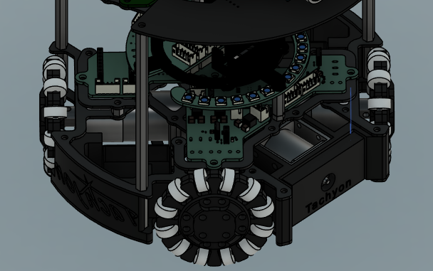
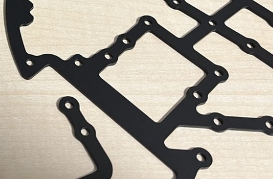
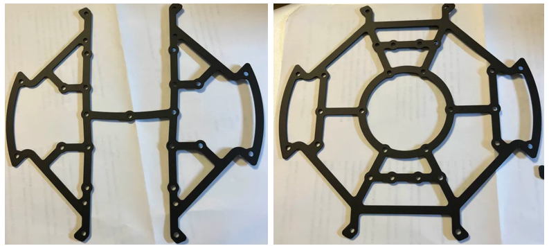
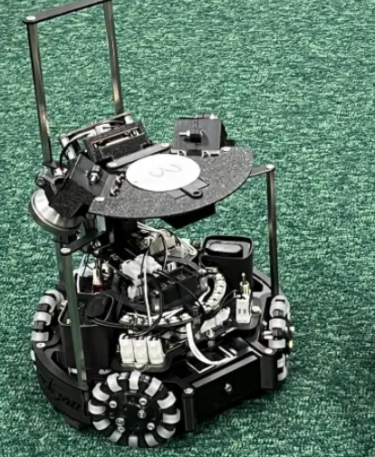
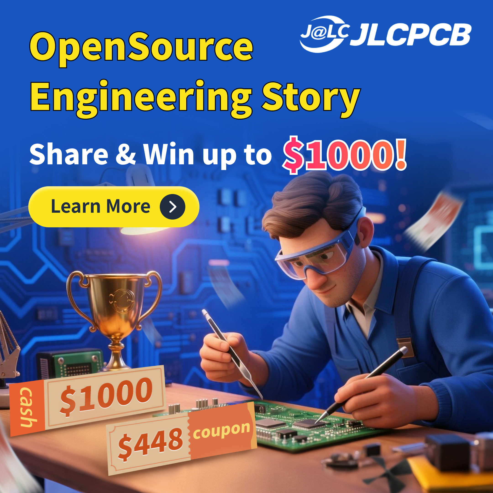

JLCPCBのCNCサービスで注文！世界大会機完成！
2025/07/02 🖊たびと
はじめに、
私たちチームTachyonは、ロボカップジュニアの世界大会に日本代表として出場します。今回は、世界大会へ向けてJLCPCBの系列のCNCサービスでロボットの機体を作っていただいた話をしようと思います。
スポンサーの紹介
JLCPCBは以前から紹介しているとおり、プリント基板の製造や表面実装といったサービスを安く、早く提供している企業で、数年前から私たちのチームではたびたびお世話になっています。そんなJLCPCBですが、その系列でCNCサービスや、3Dプリントサービスも提供しています。
↓興味がある方はタップして日本語版ホームページへ↓

CNCを維持するのは大変
私たちチームは、大学生2人組で構成されており、特にサークル内の活動でも、外部の団体内での活動でもなく、個人でロボカップジュニアに今年度出場しています。高校生時代は、部活動内でロボットの開発を行っており、ありがたいことにCNCや3Dプリンターのある充実した環境で作業させていただいていました。 しかし、大学生になった今、3Dプリンターはチームで保有しているものの、CNCは保有していません。CNCは、導入するのにも多額のお金がかかる上、清掃や、メンテナンスも定期的に必要になり、また消耗品のストックも必要になります。そんな私たちは、ロボットの機体に使用する金属板の加工を外部の企業に発注しています。 JLCPCBには、以前からお世話になっており、品質にとても信頼をおいています。そんなJLCPCBのCNCサービスを利用して、ロボットの機体を作成していただきました。
注文した部品

今回は、足回りの大きな円形のアルミ合金フレームを注文しました。ロボカップジュニアでは、軽さはもちろんですが、激しくぶつかり合うため十分な強度も求められます。そのため、私たちは以前から機体にアルミ合金フレームを使用しています。
↓興味がある方はタップして日本語版ホームページへ↓
かっこいい！アルマイト処理が断然おすすめ！
私たちのロボットの特徴は、とことん真っ黒な機体です。金属の色さえスペーサー以外ありません。これは、CNCで加工していただいたアルミ合金板をアルマイト処理してもらって黒色になっています。これは単に黒色にするという目的だけではなくて、時に金属光沢が厳しく判断されるロボカップジュニアの車検をしっかりと通過するための対策でもあります。（個人的には黒色機体がすきなのでこの色に大満足しているだけです）。 黒色っていうと「カーボンなのかな」とかあると思うのですが、実はそういう裏側があったんですね。ぜひみなさんも試して、そのかっこよさに惚れてみてください。
発注方法
切削用のファイルを注文時に送ります。注文方法については過去のブログで詳しく紹介しています。ぜひ確認してみてください！

JLCPCBのCNCサービスでロボットの機体を製作！
2024/6/1 🖊だいなすた
到着！
注文からしばらくして、CNCで加工されたアルミ合金板が到着しました！品質もいいですし、特にバリ取りもされているようなので、手当たりがなめらかで、ケガしにくそうです。また、やっぱり黒色っていうのはかっこいいですね。とくにアルマイト処理が一部なかったりとかは特になく、全体席に均一に行われている印象です。
世界大会機のフレームの特徴！
今回のフレームは以前よりもより穴抜きしてあり、モーター回りへのアクセスがしやすくなるよう工夫されています。また、世界大会では、ジャパンオープン時とは異なるモーターを使うために、それに合わせた設計となっている点も特徴です。
世界大会機完成！
世界大会機が完成しました。世界大会機はジャパンオープンでの反省がたくさん生かされています。たとえば、ジャパンオープンではキッカーの固定具が緩んでも、締め直すためにはロボットをほぼ分解しきる必要がありました。しかし今回から、キッカーの固定はポケット部分の部品と統合し、ポケットと一緒にはずれるようにしたことで、メンテナンスがしやすくなるようにしました。 また、どうようにモーターで断線などがあった場合、以前は完全に分解する必要がありましたが、今回の機体からは、横からモーターを外せるようになり、こちらもメンテナンス性が向上しました。世界大会で不測の事態に迅速に対応で生きる機体に仕上がりました！
振り返り
世界大会への挑戦ということで、とくにサッカーオープンの日本チームはわたしたちだけという状況で、少々プレッシャーを感じますが、ロボカップジュニア選手人生最後の大会ということでとても楽しみにしています。今回もJLCPCB様には、高品質な部品を納品していただきました。本当にありがとうございます。みなさんもぜひ、プリント基板のサービスだけでなく、ほかのサービスも利用してみてくださいね！
↓スポンサーの企業の日本語版ホームページへ↓
